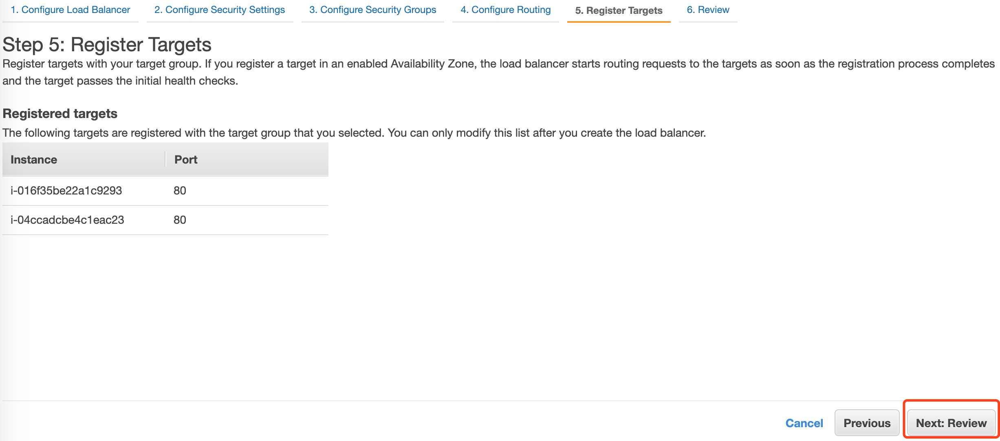

03-负载均衡配置
请确保操作的区域是 AWS新加坡区域（ap-southeast-1）。
此处的内容包括：Target group、AutoScalingGroup、ALB
创建Target Group
点击Target Groups，点击Create target group按钮
Target group name输入lab1，VPC选择vpc1，点击next按钮
点击Create target group按钮
创建AutoScaling Group
点击Auto Scaling Group链接，点击Create an Auto Scaling group按钮
在name输入lab1，在Launch template列表里选择上一步创建的launch template：lab1，点击next按钮
VPC选择vpc1，Subnet选择publicsubnet1和publicsubnet2，点击next按钮
勾选Enable load balancing，target group选择之前创建的target group：lab1，勾选ELB，点击next按钮
修改Group size，选择Target tracking scaling policy，点击skip to review按钮；

然后点击Create Auto Scaling Group按钮
创建ALB
点击Load Balancers，点击Create Load Balancer按钮
点击Application Load Balancer下面的Create按钮
输入name：lab1，VPC选择vpc1，分别选择两个子网publicsubnet1和publicsubnet2，其他保持默认，点击Next按钮
忽略警告，选择之前创建的安全组security group：lab1，点击next按钮
选择 Existing target group，选择 lab1，点击next按钮
会看到已有Auto Scaling Group里面配置的2台EC2实例，点击next按钮，然后点击下一页的Create按钮。 
然后等待这个Application Load Balancer状态state变为active；拷贝它的DNS name（此处为 lab1-1377874568.us-east-1.elb.amazonaws.com）
验证测试
在您的浏览器里面粘贴上一步部署的Application Load Balancer的 DNS name
查看 apache页面
http://<Application Load Balancer DNS name>
# http://lab1-1377874568.us-east-1.elb.amazonaws.com
查看动态更新数据库的页面
http://<Application Load Balancer DNS name>/db.php
# http://lab1-1377874568.us-east-1.elb.amazonaws.com/db.php
~完~